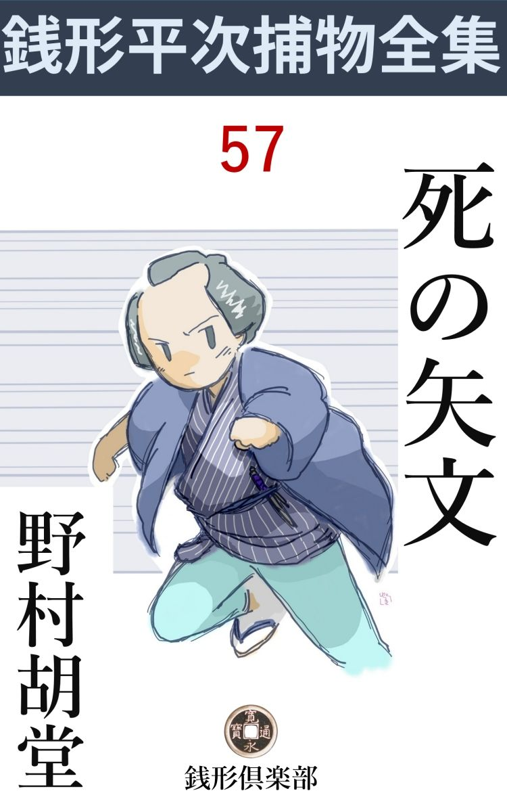
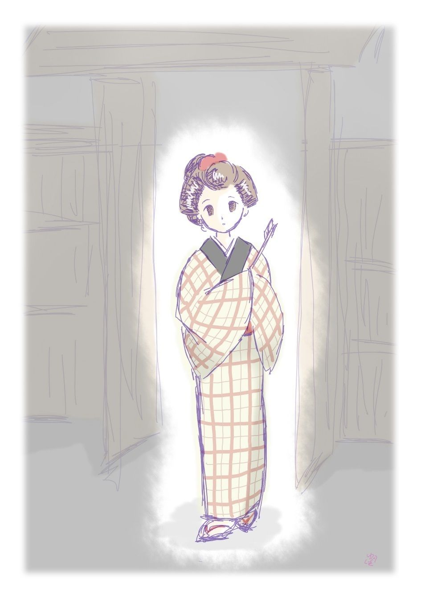

| 死の矢文: 銭形平次捕物全集第57話 (銭形倶楽部) | |
| 野村胡堂 | |
| ZENIGATA CLUB (2018) | |

一
相模 屋の若旦那新助は二十一、古い形容ですが、日本橋業 平 といわれる好い男の癖に、去年あたりからすっかり、大弓に凝ってしまって、大久保の寮に泊り込みのまま、庭の垜 で一日暮すことの方が多くなりました。
主人の喜兵衛はそればかり心配して、親類や知己に頼んで、縁談の雨を降らせましたが、新助はそれに耳を傾けようともしません。
大久保の寮の留守番には、店中の道楽者茂七を置いて、出来ることなら、若旦那新助の趣味を、歌舞伎芝居なり、江戸小唄なりに振り向け、間がよくば、遊びの一つも覚えさせようとしましたが、それが大当て違いで、道楽者の茂七までが、木 乃 伊 取りが木乃伊になって、大弓に凝り始めたという情報が、大久保にやってある下男の権治の口から店の方へ伝えられました。
相手とも師範ともなるのは、同じ大久保のツイ近所に住んでいる浪人者佐々村佐次郎、これは二十六七、男が好く、器用で、字もよく書き、弓もよく引き、法 螺 もよく吹く、一向 身は持てないが、その代り遊び友達にはこの上もなく調法な男でした。
その日も昼頃から始まって、申刻 前にはかなり草臥 れましたが、近頃油の乗って来た新助は、なかなか止そうということを言いません。
「熱心も宜いが、お茶を淹れるのを忘れては困るな、俺は咽 でも濡らして来る」
佐々村佐次郎は町人風なぞんざいな口を利いて、そそくさと肌を入れると、苦笑を残して立ち上がりました。
十月といっても、半日陽に照りつけられると、全く楽ではありません。
それから又しばらく------。
「若旦那、お茶でも淹 れさせましょうか。当る当らないと言っても、およそ程合いのあるもので、------今日はまるで的 の方が逃げているようですぜ」
茂七はおどけた顔をしました。主人にこんな事を言いながら、少しも怒らせないような、滑 らかな調子があります。
「無礼なことを言うな、茂七、------お前が見ているから当らないんだ。向うを向いているがいい。一本で金的を射止めるから」
「へエ」
「お前の顔を見ると、大概の的は逃げ出すよ。後向きになって御覧」
「矢を持って駆けて行って、的へ突っ立てるんじゃないでしょうね、若旦那」
「馬鹿にしてはいけない。私は本当に怒るよ」
「へエへエ、こんな工合に？」
茂七は神妙に後向きになりました。
「顔もそっちへ向けるんだよ。眼の隅から、チラチラ見たりしちゃいけない」
「へエ------驚きましたネ、------的の方が飛んで来て、食い付きゃしませんか」
「------」
冗談を言う茂七には取り合わず、新助は本矢に近い頑固 な鏃 の入った稽古矢を一本選ると、その根の方へ、袂から取出した矢文------小菊へ細々と認 めて、一寸幅ほどに畳んだのをキリリと結び付け、手馴れた弓につがえて、ひょう と射ました。
矢は垜 の上を遥かに越えて、その後の疎 らな木立を抜け、隣りの庭------植木屋の松五郎の庭------へと飛んで行きます。それからほんのしばらくの後------。
「もう宜いんですか、若旦那」
そう言う茂七の声と、植木屋の庭から聞える不気味な悲鳴といっしょでした。
「------」
新助は何とも知れぬ予感に、サッと顔色を変えます。
「何でしょう？ 若旦那」
「------」
新助は立ち尽しました。垜 の上を越して、隣りの庭へ射込んだ矢は、いつでも松五郎の娘のお駒が、間もなく木戸を開けて、『矢が飛んで参りました』------そう言いながら、袂にくるんだように捧 げて、新助の手へ渡してくれるのですが、今日はいつまで経ってもお駒の姿は見えません。
そればかりでなく、隣りの庭はしだいに騒がしくなって、泣き声や、人を呼ぶ千切れ千切れの声までが、筒抜けに聴えて来るのでした。
二
「若旦那」
「行ってみよう、茂七」
二人は垜 の後ろへ廻ると、木戸を押し開けて、植木屋松五郎の庭に飛込みました。が、
「あッ」
たった一と目で、そこに釘付けにされたのも無理はありません。松五郎の娘お駒、山の手一番と言われた十九の艶姿 が、無慙大地の上に仰向に倒れて、玉を延べたように美しい咽喉、少し左寄りの方へ、矢文を結んだままの矢が、箆 深 く突っ立っていたのです。
「どうした、どうした」
生垣を一と跳びに、後ろから飛んで来たのは佐々村佐次郎------。あまりの虐 たらしさに、ハッと息を呑みました。三人の眼玉が飛出さなかったのが不思議な位です。
「お駒------」
「確りしておくれ」
お駒を抱き上げたのは母親のお辰と、客分で置いた親類の娘お雪の二人でした。
「誰がこんな事をしたんだえ、お駒」
お駒の白い首筋を染めて、襟元へ溜った血が、母親の胸へ膝へと溢 れかかります。
「茂七、外科を呼んで来い」
一番先に理性を取戻したのは、さすがに浪人者の佐次郎でした。
「お駒、------確りしておくれ、------死んじゃいけないよ、------お駒」
半狂乱になった母親、膝の上へ抱き上げたお駒の、次第に頼み少くなるのを見ると、犇 々 と抱きしめながら、自分の身体といっしょに揺ぶりました。
「お駒、------誰だい、こんな目に逢わせたのは」
がしかし、お駒はもう正気もありませんでした。洞 ろな眼を開いて、わななく唇が少し動くと、宙に物の影を追うように、
「若旦那------若」
たった一と言、そう言ったまま、ガックリ首を垂れてしまったのです。
「お駒」
「お駒さん」
母親とお雪は左右から取縋 りました。が、もうこと 切れてはどうする事も出来ません。
その時、------
「何？ お駒がどうしたと？」
飛んで来たのは、父親の松五郎、少し酔っている様子ですが、一と目、この様子を見ると、お駒の側へ行く前に、
「やりやがったな、畜生ッ」
恐ろしい勢いで新助へ掴みかかります。
「松五郎、馬鹿なことをするな」
驚いて二人の間へ割って入ったのは佐々村佐次郎でした。
「馬鹿な事じゃねえ、娘の敵を討つんだ、退いてくれ」
腰から抜いた植木鋏 を当座の武器に、新助目がけて振り冠ったのです。
「矢が垜を越えたのは過ちだ。つまらない事をするな」
佐次郎は後ろから羽掻締めに、しばらくは揉み合います。
「町人が弓なんか玩具 にするから、こんな事を仕出かすじゃないか。何べんも文句を持込んだのを調戯 い面で聴きやがって、こんな出来の良い娘を、玉無しにしてしまって畜生ッ、どうするか見あがれッ」
五十男の一刻 な松五郎は、本当に鋏位は新助に突っ立て兼ねません。佐々村佐次郎、それを押えるのが本当に精一杯でした。
「------」
新助は萎 れ切って、いつの間にやら、生 湿 りの土の上へ坐っておりました。言いかわしたお駒を殺した激動に打ちのめされて、松五郎の憤怒などは、もとより眼中にありません。
茂七に追い立てられるように、そこへ外科が来ましたが、こと切れた娘の死骸へ、魂を吹込む術 はありません。
三
「銭形の親分がここにいなさるのも、なんかの廻り合せだろう。検 屍 の済む前に、一と通り見て下さい」
百人町の重吉は良い男でした。ガラッ八の八五郎とは無二の仲で、嘗 ては銭形平次の世話になった事もあるので、御用聞根性を忘れて、こう平次の知恵を借りようとしたのです。
近頃はちょいちょい凄い押込みがあったので、その足取りを辿るともなく、百人町の重吉の家へ来合せた平次。大久保小町と言われた、植木屋松五郎の娘お駒が、稽 古 矢 に射られて死んだと聴いて、さすがに商売気を離れた好奇心は動きます。
「稽古矢で射られて死んだと言えば、何の変 哲 もないが、------坊主矢で射られた位じゃ人間はなかなか死ぬものじゃねえ。兄哥さえよかったら、ちょいと覗かして貰おうか」
「そりゃ、願ってもないことだ、親分」
重吉は案内役に立ち上りました。続く平次、ガラッ八。
植木屋はすぐそこ、中へ入ると、全く眼も当てられぬ愁嘆場 です。
若旦那の新助を撲ち殺して娘の敵を討つ------という松五郎を、佐々村佐次郎と平次が、どんなに骨を折って宥 めたことでしょう。検屍の済まぬ死体は、まだ家の中へ入れるわけには行きませんが、とにもかくにも、松五郎を家の中へ押し込め、人心地もないほど興奮する新助は、茂七を付けて寮へ引取らせ、直 ぐさま親の喜兵衛に来るようにと、日本橋の相模 屋 まで使いの者を出させました。
「八、これから少し調べて見よう、手伝ってくれ」
「何をやりゃいいんで、親分」
「第一番に、後ろへ廻って、娘の身体を起してくれ」
「こうですか、親分」
八五郎は後ろから娘の死骸を抱き起しました。頸動脈から噴出した血は、首から襟へ胸へと、殆ど半身をひたして、碧 色 の艶 をさえ帯び、娘の蒼白い顔は、不意を喰ったにしては、少し深刻な恐怖を刻んで、美しさを破壊しない程度ながらも、物凄く歪 んでおります。
「矢へは手を付けなかったろうな」
平次はあたりを見ました。
「誰も手を掛けません」
母親のお辰は、涙の隙から、僅かに引取りました。矢の根の方へ近く結んだ文が、鮮血に染んで見る影もありませんが、誰かがその上から握ったらしく、結び目が乱れて、少し滅茶滅茶になっているのです。
「八、おかしいとは思わないか」
「へエ------」
八五郎はキョトンとしております。
「銭形の親分、向うから飛んで来た矢なら真っすぐか、下向きに立つ筈だが」
重吉はさすがに気がついた様子です。
「その通りだよ兄哥 、矢は上向きに突っ立っている、------踞 んだところを後ろからやられなきゃ、こんな工合になるわけはねえ」
平次は矢を抜いて見ました。何の他愛 もありません、ほんの頸動脈をやられただけです。
「おや？」
矢の根が普通の稽古用のではなかったのです。
「新助はたしなみ だと言って一本ずつはそれを持っているが------悪いものを射たな」
佐々村佐次郎は独り言ともなくいいます。その間に平次は血に染んだ結び文を、丁寧に解いて見ると、
------『今夜いつもの刻限に木戸のところで逢いたい------』
という他愛 もないもの。お駒どの、新の字と署名した、何の疑いもない代物です。
「お前さん達は騒ぎのあった時、どこにいなすった」
平次はまだ泣きじゃくるお辰に訊ねました。
「お勝手で晩の支度をしていましたよ」
お辰はその時の事を思い出して、又ひとしきりしゃくり上げました。
「お前は？」
「縁側で縫物をしていましたよ」
お雪はスラスラと応えて、平次をふり仰ぎます。二十一、二でしょう。その当時にしては少し嫁 き遅れ気味で、死んだお駒と比べるせいか、あまり見よげな娘ではありません。
「お駒は？」
「お隣りで弓が始まると、何か用事を拵 えて裏へ出ますよ。だからこんな目に逢ったんでしょう」
お雪は少し忌々 しそうでした。
「親方はどこにいたんだ」
「畑で植木の手入れをしていた筈ですが------」
「筈？」
「ときどき仕事の合間を見て飲みに行くから、当てになりませんよ」
女房のお辰は妙なところで、日頃の憤懣 を洩らしました。
「今日も飲んでいたようだな、八」
「鋏 をモギ取る時、奈良漬 臭いのをウンと吹掛けられましたよ」
ガラッ八は酸っぱい顔をして見せます。
「この手紙で見ると、新助とお駒は、ときどき逢引 していたようだが、お前さんは、知らなかったのかい」
「知らないではございませんが、若い者は止めても聴き入れちゃくれません」
お辰は自信のない調子です。恐らく相手は大家の若旦那なので、見て見ぬ振りをしていたものでしょう。
「ところで変な事を訊くようだが、あれは親方の本当の子かい？」
平次はお駒の美しい死顔を指しました。
「------」
「あんまり似なさ過ぎる。が、お神さん、本当のことを言ってくれ、どうせ後で知れることなんだから」
「私の連れ子ですよ、親分」
「というと？」
「あの娘 が二つの時前の亭主に死別れて、ここへ連れ子を承知で二度目の嫁入りしました。でも、家の人は、それはそれはお駒を可愛がってくれました。------十七年も手 塩 にかけて育てたんですもの」
お辰はそれとなく、夫の松五郎のために弁解しております。
「これは？」
平次の指はお雪を差しました。
「主人の姪 ですよ」
美しい養子と醜 い姪と、この辺にも因縁が絡 んでいそうです。
四
「親分、帰りましょうか」
ガラッ八は大きな欠伸 までして見せました。たかが稽古矢の間違いで人を一人死なせた位のことで、日の暮れるのも構わず、植木屋の庭と相模屋の寮から離れようともしない、親分の平次の態度が不思議でたまらなかったのです。
「待ちな、八、今晩はきっと面白いことがあるから」
「へエ------、どんな面白いことで？」
「あの松五郎は一と通りの男じゃねえ、三道楽の修業が積んで、人間を叩き上げているから、あれ程の娘を殺されて、唯で引込む筈はねえ」
平次はそこまで睨 んでいたのです。
「金にする積りで？」
「それも五十や百の金じゃあるめえ」
「へエ------、太てえ親父があるものですね」
「太いか細いか、もう少し経って見なきゃ解るまい」
平次はなかなか帰る様子もありません。
それから半刻 ばかり。
「おや、相模屋の主人が来ましたよ、番頭と二人で」
ガラッ八は平次の袖を引きます。
「静かにするんだ」
三人は平次を中に、濡 れ縁に腰をならべました。
中は六畳の一の間、検屍のすんだ死骸は、まだ棺 にも納めず、煎 餅 蒲団の上へ北枕に寝かし、二枚折屏風 を逆 様 に、手習机をすえて駄線香をフンダンに燻 しながら、松五郎はその前に神妙に膝小僧を揃え、ポロポロと涙をこぼしては、お茶に紛 らせた湯呑の冷酒を呷 っております。
「相模屋さんがお見えだよ、お前さん」
お辰は後ろから声を掛けました。
「何を？」
振り上げた顔の前へ、もう相模屋喜兵衛は恐れ入って坐っていました。年の頃五十七八、大町人らしい恰 幅 で、後ろに従えた優さ男の茂七とは、対 蹠 的 に堂々としております。
「親方、------何にも言わない、------伜に代って私が詫びます。どうか許してやって下さい」
「------」
喜兵衛はピタリと畳の上へ両手を突きました。が、松五郎は血走る眼を挙げてジロリと見たっきり一言もいいません。
「あんな綺麗な一人娘に死なれて、親方の気持はどんなだろう、考えただけでも、私も胸が痛くなる------どんな事をされても決して怨 とは思わない------が」
「どんな事をされてもかい」
松五郎の血走る眼は又光ります。
「伜も悪気でした事じゃない。そこを何とか勘弁してやって下さい。親方、頼みます」
喜兵衛は本当に七重の膝を八重に折りました。
「ならねえよ」
「え？」
「勘弁などは思いも寄らねえ、------なア、相模屋さん、あっしはケチな植木屋、お前さんは江戸の長者番附にも載 るほどの分 限 者 だ。言わば提灯に釣 鐘 、------それは判っているが、思い合った二人の仲、目をつぶって許してやったら、こんな事にはならなかった筈だ」
「------」
「仲を割かれて、危ない矢文などを飛ばすからこんな事になるんじゃねえか。なア、相模屋の大将、------若旦那がお前 さんへ、お駒と夫婦になりたいと言った時、『あんな貧乏人の娘を貰っちゃ世間や親類方の手前も悪い、せめて吉原の華 魁 、入山形に二つ星の名ある太夫でも請出して来い』------と言ったそうじゃないか。貧乏人の子かは知らないが、お駒は生 無 垢 の素人娘だ。売 女 や夜 鷹 に劣 るように言われて、親の俺はどんな気持だと思う」
「それを言われちゃ、親方」
「お駒は身でも投げ兼ねない様子だから、逢引 も見て見ぬ振りをしていたんだ。------こんな思いまでさせられた上、娘を殺されて引っ込んでいられると思うか、ヤイ」
「親方」
松五郎の激怒の前に、喜兵衛は口も利けません。
「ヤイ、どの面下げて来やがったんだ。禿 茶瓶 の唐 変 木 奴 、詫びが言いたかったら、せめて伜の首でも持って来やがれ、手前 の雁 首 まで欲しいとは言わねえ」
松五郎は湯呑の冷酒をガブリと呷 ると、中腰になって喜兵衛を睨みすえます。
「親方、何と言われても一言もない。重々私が悪かった、------改めて人でも頼んで詫びを入れましょう。今晩のところは私の心持が済むように、せめて線香でも上げさして下さい」
「ならねえ」
膝行 り寄る喜兵衛は、松五郎の手に弾き飛ばされました。
「それじゃ、これだけでも受けて下さい。ほんの私の寸志、香 奠 の代りだが------」
帛紗 のまま押しやったのは、どう少なく見ても、百両は下らなかったでしょう。が、それを見ると松五郎の忿怒は爆発点に達しました。
「何をしやがる。人の命まで金で買おうとしやがる、金持根性はそれだから気に入らねえよ。申訳がないと思ったら、腹を切るなり坊主になるなり、せめて娘があれほどまでに思いをかけた、伜の瓢箪 野郎をお通夜にでもよこしゃがれ、間抜け因 業 爺 い奴、相模屋の身上、逆様に振って持って来たって、勘弁なんかしてやるものか」
「親方」
あまりの剣幕に驚いて、喜兵衛も立上がりました。松五郎は本当に掴み懸りかねまじき勢いです。
「そんなに有難い金なら持って帰りやがれ、金を有難がるのは金持ばかりだ、ざまア見やがれ」
松五郎は帛紗 をさらったと思うと、喜兵衛の額のあたりへ叩き付けました。幸い、一髪の違いで避けましたが、帛紗は柱に砕けて、中から飛出したのは、小判で百枚、嵐に吹き散らした何かの葩 のように、バラバラと乱れ散ります。
さんざんの体で逃げ帰る喜兵衛と茂七、松五郎はその後姿を見送って、ポロポロと涙をこぼしながら笑っておりました。
五
その晩、お通夜へ行った筈の新助が、木戸の外で、植木鋏 で喉 を突かれて死んでいたのです。
見つけたのは迎えに行った番頭の茂七、その時はもう夜が明けておりました。朝露の中に崩折れた形になって、------お駒と同じように------、半面半身に血を浴びた新助の死骸は、何となく約束事のようで、茂七を顫え上がらせたのも無理はありません。
「た、大変だ」
茂七が這うようにして帰ったのを見ると、妙に不安な一夜を過した喜兵衛は、跣足 のまま飛んで出ました。
「新助」
抱き起しては見ましたが、朝露に冷々と洗われた顔には、もはや生命の余 燼 も残ってはいません。
「誰がこんな事をした」
死骸の側に投り出されたのは、使い古した植木鋏が一挺、碧 血 に染んで、この下手人を物語っていそうです。
「おや？」
茂七は死骸の下になっていた浅 草 紙 を取出しました。露に濡れないところを見ると、夜のうちからここに置いてあったのでしょう。およそ下手な字で、
------三途の川でお駒が待ってるぞ------
とこれだけ。
とにもかくにも小僧を走らせて、百人町の重吉を呼んだのはそれから四半 刻 の後。
それをたった一と眼見た重吉は、
「到頭やりやがったな」
昨夜、平次に言われた警戒の手を、宵だけ解いてしまったことを口惜しがります。
「親分、これは、あんまりじゃありませんか、敵を討って下さい。------伜も悪かったには相違ないが過 ちでしたことのために、命まで取られちゃ叶わない」
喜兵衛はもう下手人を松五郎と決めてかかるのでした。
「よしッ」
重吉は飛んで行きました。植木屋の戸口を叩くと、戸は中から開いて、バアと出たのは主人の松五郎です。
「おや、親分さん、お早う」
と松五郎。
「お早うじゃねえ、太てえ野郎だ。手前ゆうべ何をやった」
「へエッ、あの一件ですか、相模屋の禿頭 へ小判を叩き付けた」
「違う------そんなつまらねえ話じゃねえ、証拠はみんな挙ってるんだ。素直にお縄を頂戴しろ」
「何の証拠で、親分」
松五郎の顔には何の蟠 りもありません。
「ゆうべお通夜に来た新助を木戸のところで殺したろう」
「えッ」
「白ばっくれるな松五郎。娘の敵と言うならお上にもお慈悲がある、神妙にお縄を頂戴せい」
「あの、新助が、木戸のところで？」
「知らないと言う積りか」
重吉の左手は、松五郎の手首に掛っておりました。右手に懐を探 ると取出したのは一条の捕縄。
「そいつは大笑いだ、------いかにもこの松五郎が殺したよ、娘の敵 倶 に天を戴かず」
「そいつは親の敵だ」
重吉の縄は、そう言ううちにも、キリキリと松五郎を縛り上げます。
「あれ、お前どうしたのさ」
驚いたのは女房のお辰でした。ろくに眠らなかったらしい脹 れた眼を、眩しく外へ出したのです。
「騒ぐなよ。------俺はな、ゆうべ新助の野郎を撲ち殺したんだ------敵 は確かにこの親父が討った------とお駒の死骸にそう言ってくれ」
「お前さん、気でも違やしないかえ」
「気は確かだ、酒もまだ飲まねえ------なア、お辰、手前は生さぬ仲だからって、俺がお駒を可愛がりようが足りないような顔をしていたが、今度はよく判ったろう、俺はお駒が可愛くてならなかったんだ。------敵を討ったのは俺だともさ、他の奴であってたまるものか」
松五郎は泣癖らしい眼をしょぼしょぼさせて重吉に追立てられました。
「お前さん」
追いすがるお辰。
「達者で暮せよ、後添 なんか捜す気になるな、馬鹿奴」
「それどころじゃない、------お前さん本当にやったのかえ」
「本当ともさ、あんな野郎、生かしておけるかおけねえか考えて見ろ」
「------」
お辰はヘタヘタと崩折れると、手放しで泣き出しました。
「好きだからって無闇に生物 を食うな、馬鹿野郎」
「お前さん、私一人おいて行くのかえ」
「当り前だ、畜生」
「------」
朝の陽の豊かに射し始めた中を、二人は次第に遠ざかります。
六
「おや銭形の親分」
その日の巳刻 前、松五郎を番所へ預けてホッとしたところへ、平次と八五郎が訪ねて来ました。
「重吉兄哥、------あれからどうしたえ」
「いやもう大変な騒ぎでしたよ、親分」
重吉にして見れば、『今夜何か一と騒ぎあるだろう』と言った平次の予言があまり見事に当ったのが不気味でもあったのです。
「そんな事だろうと思ったから、神田からひと飛びにやって来たよ」
「有難てえ、親分」
「どんな事があったんだ」
「松五郎が、お通夜に来た新助を、木戸のところで植木鋏で突き殺したんで------」
「そんな馬鹿な事があるものか」
平次もすっかり面喰 った様子です。
「本人が白状したんだから、間違いありません。それにこんなものまで書いて死体の下へ入れておいたんで」
「はてな？」
「娘の敵を討った------てんで大 威 張 りですよ」
「どこにいるんだ、松五郎は？」
「番所ですよ」
「よし、行って見よう」
平次は百人町の番所へ飛んで行きました。係り同心の出役はまだ。番太の老爺と、重吉の子分の下っ引が、一生懸命、松五郎を見張っている最中でした。
「親方」
「ああ銭形の親分さん」
松五郎は顔を挙げました。昂然 として、何の恐れもありません。
「親方、大変なことをやったそうだな」
と平次。
「へッ、へッ」
松五郎は泣き笑いをしていたのです。
「よく切れるネ、あの脇差 は」
平次は変なことを言い出しました。
「家重代の脇差 だから、斬れもしますよ」
「一と太刀でやったのかい」
「へエ」
「見事な袈裟掛 けだネ」
「そうでもねえよ、親分」
話が次第にとん珍漢になるのを、重吉は酸っぱい顔をして眺めております。
「何か書いた物を置いてあったそうだな」
「へエ、何、ほんの悪戯 で」
「お前のところのお宗旨は何だい」
「法華 ですよ、親分」
「それでお題目 を書いて、手にかけた者の死骸の側へ置いたのか、大した心掛けだな、親方」
「それほどでもねえよ、親分」
松五郎の極り悪そうな顔というものはありません。
「あの紙はどこで買ったんだ、奉書のようだが------」
「日本橋で買いましたよ、特別上等の奉書で」
話はしだいに脱線して行くばかりです。
平次はこの辺で切上げると、フラリと外へ出ました。
「銭形の親分」
重吉は狐につままれたような顔です。
「重吉兄哥、あの通りだ、------下手人は松五郎じゃねえ」
「でも白状しましたぜ」
「そう言って威張 りたかったんだ、------松五郎はそんな男だよ」
「すると？」
「この騒ぎは最初から間違いだらけさ、------お駒が新助の射た矢に当って死んだのなら、松五郎に新助を怨 む筋もあるが、------お駒は人に殺されたと解ったら、松五郎も縄まで打たれて喜んじゃいないだろう」
「えッ、お駒は人に殺されたと言うんで？」
重吉は仰天した。平次の言うのがあまりにも桁外 れです。
「その通りだ、------物置の羽目板に立った矢を抜いて、お駒の喉 笛 へ突っ立てた奴がいるんだ。現場でその証拠を見せてやろう」
「------」

平次はガラッ八と重吉を従えて、もういちど植木屋の庭へ入りました。
「それ見るがいい。物置の羽目には、この通り矢の突っ立った跡がたくさんある。隣りの庭で弓が始まると、お駒はここへ来て矢文を待っていたんだ」
「------」
「垜 を越して、この羽目へ射込むには、坊主矢じゃ駄目だ。新助が本 矢 鏃 を使ったのはそのためさ」
「------」
「ところで、ここにいるお駒をそっと殺せるのは、母親のお辰と父親の松五郎と姪 のお雪の外にはない。------お雪では、矢で人を突き殺せる力が無いから、俺は最初、松五郎じゃないかと思った。あれは女房の連れ子で本当の娘じゃないから、殺しておいて新助のせいにすれば、相模屋から百や二百は強 請 れる」
「------」
「が、松五郎は本当の娘よりもお駒を可愛がっている。それに、昨夜のあの剣幕だ。あれは芝居や掛引きで出来ることじゃない」
平次の説明に、ガラッ八と重吉の眼の前には、全く新しい事件の角度が見えて来ました。
「じゃ、誰でしょう、親分」
「こっちへ来て見るがいい」
平次は植木屋の裏口へ行くと、そっと姪のお雪を呼出しました。
「お雪------本当の事を言ってくれ。お駒が生きている時、一番執念深く付き纏 ったのは誰だい」
「三十人位ありますよ」
「冗談じゃない」
「大久保小町と言われたお駒さんですもの、町内の独り者はみんな付け廻したと思っても間違いありません」
「そのうちで、一番うるさくしたのは？」
「お隣りの茂七さんかしら？」
「------」
茂七はあの時新助の側にいたのです、お駒を殺せる道理はありません。
「それとも佐々村さんかしら？」
あのとき佐々村佐次郎は、お茶を飲みに母屋 へ帰って、遥かの後方 にいた筈です。
「変な頼みだが、------この家で使っている鼻紙を一枚貰いたいが」
「お易い御用で」
お雪は笑いながら、懐紙を出してくれました。まことにあり来りの塵 紙 ですが、新助の死体の下にあった浅草紙とは違います。
七
「お前はお駒に気があったそうだネ」
「へエ、恐れ入ります。が、親分さん、町内でお駒に気のねえのは、地蔵様ばかりで」
茂七は遊び慣れた人間らしく軽く外 らしました。
「ところで、お前さんは新助の側にいてよく知ってるだろうが------弓を射てから、悲鳴が聞えるまでどれほどの間があったろう」
平次の問は不思議です。
「へエ、それが不思議なんで------煙草半服ほどの間がありましたが」
茂七の顔は伸びたり縮 んだりします。矢が飛んでから、悲鳴が聞えるまで、そんなに隙 のあるのは何とした事でしょう。
「有難う、------それから、この家に佐々村佐次郎さんの書いた物があるなら、内 証 で見せて貰いたいが」
「へエ、------お手紙が二、三本と、弓の伝授書があった筈で------」
茂七は奥から二品三品持って来てくれました。能筆と噂された佐次郎の筆 蹟 は、全く見事なもので、新助の死体の下にあった、浅草紙の文字とは比較にもなりません。
でも平次は浅草紙の文字を出して、そっと比べて見ました。
「違い過ぎるね、親分」
覗いたのはガラッ八の長い顔です。
「それから、塵紙か浅草紙があったら一枚貰いたいが、------半紙はいけない」
「へエ------、あまり綺麗じゃ御座いませんよ」
茂七は下男部屋から浅草紙を二、三枚持って来てくれました。比べて見ると、曲者の遺 した紙と全く同じもの、断ち口までピタリと合います。
「もう一つ、昨日、ここで留守居をしていたのは誰だろう」
「下男の権治でございます」
「呼んで来て貰おうか」
平次はしだいに攻撃の網を絞 って行く様子です。
「俺 がに用事かね」
ヌッと庭口へ来たのは、三十前後山出しらしい男です。
「つかぬ事を訊くが、------昨夜佐々村さんはあの騒ぎの前にお茶を呑みに来た筈だね」
「へエ、来ましたが、お茶を淹 れて上げると、喉が乾いて面倒臭えから水をくんろ------と言ってね、柄杓 で一杯飲んで------」
「それから騒ぎの始まるまでここに休んでいなすったのか」
「大方そうだんべい、------俺は直ぐ煙草を買いに百人町まで行ったから、後の事は知んねえ」
「誰の頼みだ」
「佐々村様の頼みだよ」
「フム」
「帰って来たらあの騒ぎだ、------あッ、まだ、その時の煙草を佐々村様へ渡さなかったよ」
権治はあわてて下男部屋へ飛込むと、五匁玉の刻煙草 を持って来たのです。
「その煙草は俺が持って行ってやる、どれ」
平次は手を伸ばして、煙草を引ったくるように庭の方へ出ました。
「親分、下手人はいったい誰でしょう？」
とガラッ八。重吉も覚束 ない顔をして眺めております。
「まだ解らねえ、------手前と重吉兄哥は、ここを真っ直ぐに垜 の前を通って、木戸をあけて、ゆっくり植木屋の裏へ出てくれ、何か変ったことがあったら、遠慮なく声を出してもいい」
「へエ------」
何が何やら解りませんが、ガラッ八と重吉は平次に言われた通りの道を、植木屋の裏へ出ました。何の変ったこともありません。
いや、変ったことには、植木屋の裏へ出てから出 会 したのです。
「おや？」
「どうだ、俺の姿は見えたか」
そこには寮の裏口で別れた銭形平次が先廻りして立っているではありませんか。
「親分、どこを来なすったんで」
「寮の裏口からいきなり植木屋の庭へはいれるんだ。柴 や要 で一パイだから、ここまで駈け抜けて来ても、庭や垜 のあたりから見えねえ、曲者はこの道を通って来てお駒を口説いたのさ」
「えッ、すると------」
「お駒は聴くわけはない。男がカッとなったところへ、頭の上の羽目板へ矢文を結んだ矢が突っ立った、------こいつが邪魔をするのだ、と思うと、前後の見境いもなく、その矢を抜いて下から突き上げるようにお駒の喉を突いた」
「------」
二人は固唾 を呑みました。
「曲者は自分には疑いは少しも掛らないと思った、------その上、松五郎は腹を立てて、新助を殺すと言って騒いだ、------曲者はそれを聞くと、恋敵の新助もやっつける気になり、お通夜に来るのを木戸口で待ち受け、松五郎の植木鋏 で突き殺した、------それだけにしておけばよいのを、人間が器用なばかりに、余計な細工をしたのだよ。寮の下男部屋から浅草紙を持出し、変な字を書いて、松五郎の仕業と思わせようとしたのが悪かった」
「だがあの字は拙 かったぜ、親分」
「左手で書いたのだよ、ハネるところに左癖 がある、------それに左手で書いても巧い人の字はウマ味がある。名筆も悪筆も一つの癖だから左で書いても右で書いても大した手筋に違いのあるものじゃねえ、------それに下 手 は上手の真似が出来ないように、上手も下手の真似は出来ないものだ」
「成アる」
平次の説明は一点の疑いもありません。下 手 人は間違いもなく、残されたたった一人の人間を指しているのです。
× ×
「岡っ引奴------よく当ったよ」
「あッ」
木立の間から、ヌッと出て来たのは、浪人佐々村佐次郎のニヤリニヤリと笑う顔でした。
「知恵は手前の方が少しばかり優 るだろうが、腕は俺の方が確かだ。来いッ、三人とも膾 にしてやる」
ギラリ引抜いた一刀、佐次郎の顔は藍 のように見えます。多分激情に自制心を失う、不思議な変質者ででもあったでしょう。
「御用だ」
「神妙にせい」
ガラッ八と重吉は左右に分れました。正面からは平次。
「手前のすることは卑怯 だ。二本差の癖に、何と言う野郎だろう」
「汝 れッ」
疾風 の如く斬込んで来るのを、引っ外して右の手が高々と挙がりました。久し振りに平次得意の投げ銭です。
「あッ」
佐次郎はしたたかに眼を打たれたのです。
（編注）
作品中には、身体の障害や人権にかかわる、差別的な語句や表現が見られますが、本書が成立した当時の時代背景等が現代とは異なる古典的な文学作品でもあり、著者が故人でもありますので、底本のままとしました。ご理解、ご諒承のほどをお願い申し上げます。
著者---野村胡堂
挿絵---萩 柚月 © 2017
初出---「オール讀物」昭和十一年十一月号 文藝春秋社
底本---「錢形平次捕物全集」第三巻 河出書房 昭和三十一年六月十五日初版
編集・発行 銭形倶楽部